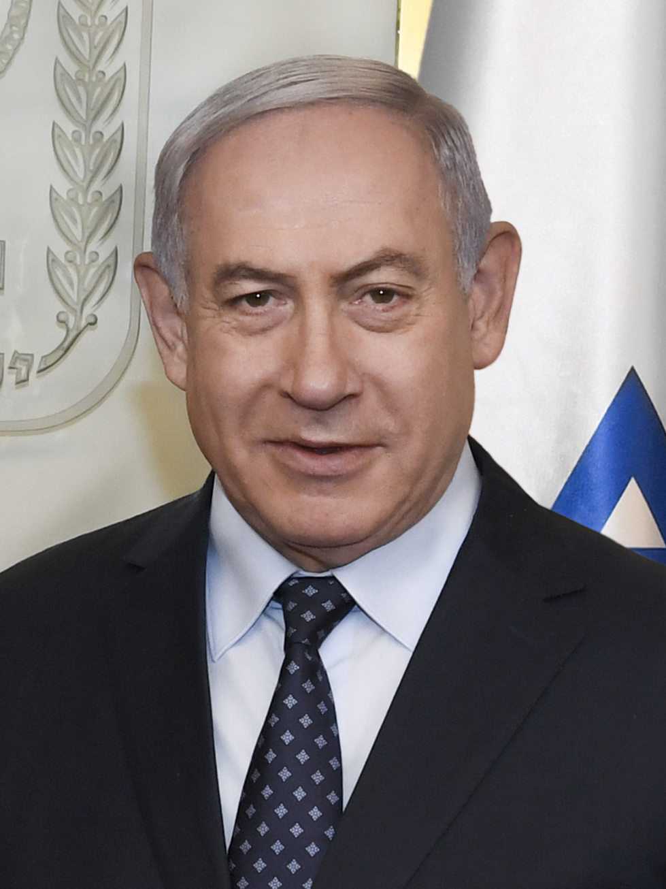
Benjamin Netanyahu
Benjamin Netanyahu
The incumbent Prime Minister and longest-serving leader in Israeli history, whose campaign centers on security dominance and political survival.
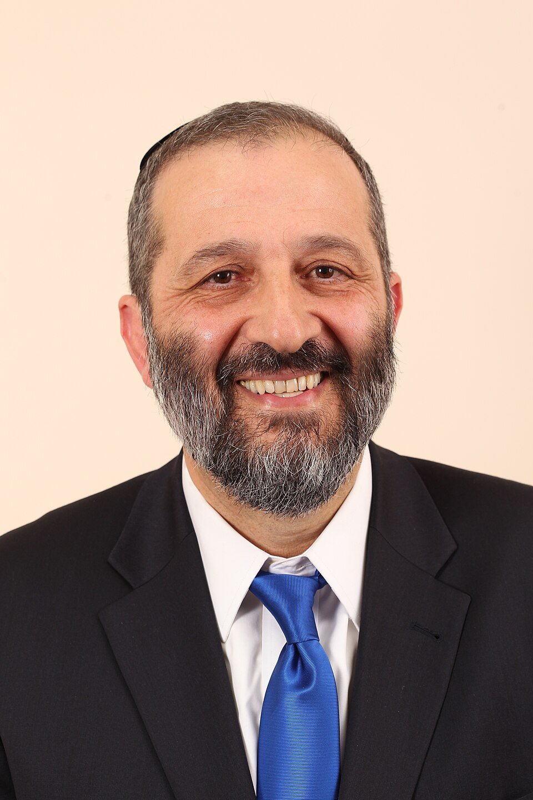
Aryeh Deri
Aryeh Deri
A veteran political operator leading the ultra-Orthodox Mizrahi community, focused heavily on securing social welfare budgets and religious status quo protections.
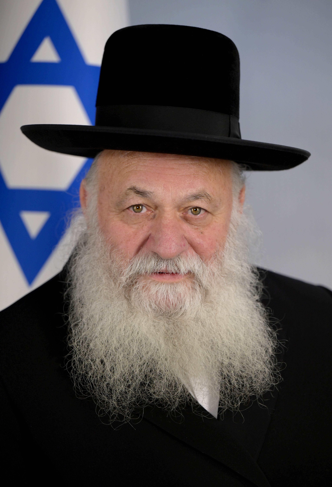
Yitzchak Goldknopf
Yitzchak Goldknopf
The leader of the Ashkenazi ultra-Orthodox faction, dedicated almost entirely to shielding Haredi yeshiva students from mandatory military conscription.
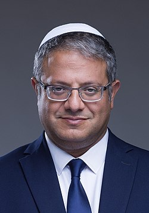
Itamar Ben Gvir
Itamar Ben Gvir
The hardline firebrand Minister of National Security who commands the ultra-nationalist voter base with an uncompromising "law and order" and pro-settlement agenda.
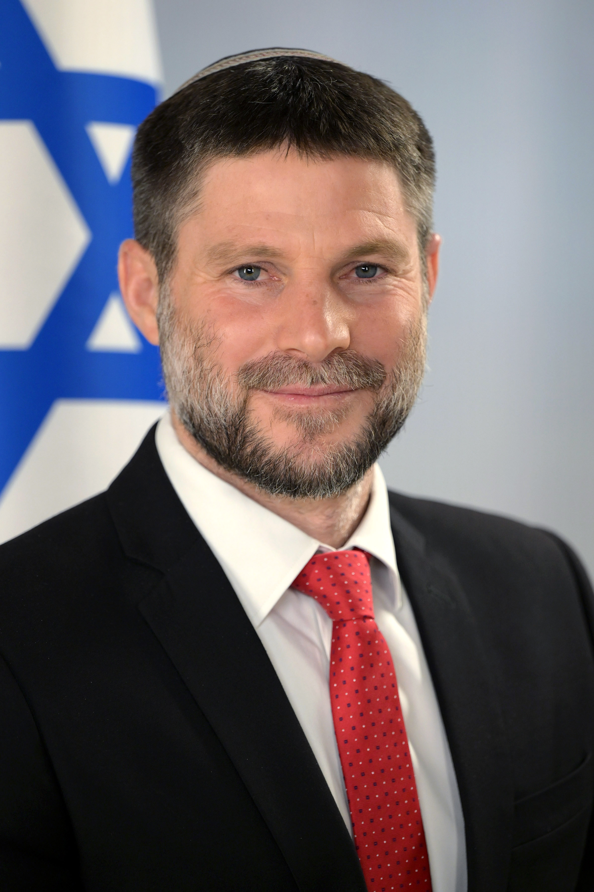
Bezalel Smotrich
Bezalel Smotrich
The current Finance Minister who represents the ideological core of the West Bank settler movement, advocating for deeper territorial annexation and conservative fiscal policy.

Gideon Sa'ar
Gideon Sa'ar
Returned to Likud via a total merger of his 'New Hope' faction; holds a guaranteed, bypassed slot within the Likud's top 10 list.
Avi Maoz
Avi Maoz
A hard-right ultra-conservative leading a single-seat faction dedicated to institutionalizing ultra-Orthodox religious values in state education.
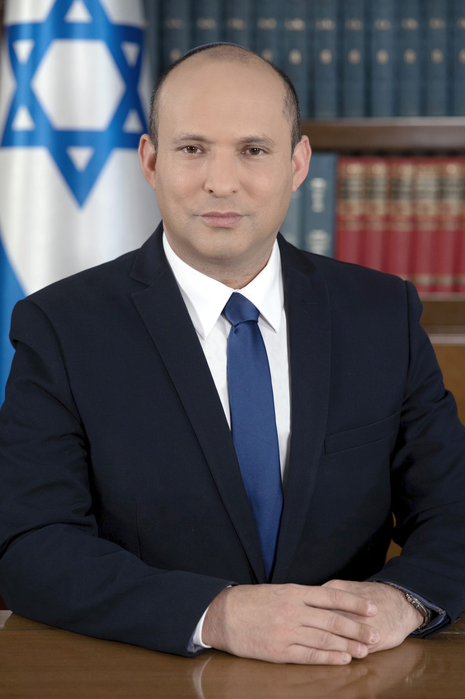
Naftali Bennett
Naftali Bennett
The former Prime Minister who has launched a massive political comeback under his new "Together" banner, positioning himself as the premier, hawkish, post-Netanyahu center-right alternative.
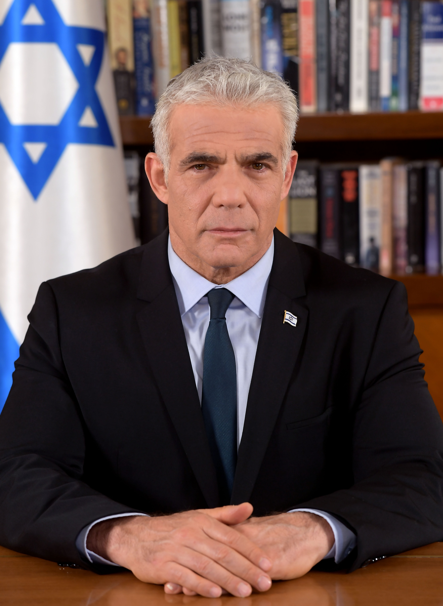
Yair Lapid
Yair Lapid
The official Leader of the Opposition and leader of the secular centrist core, who has structurally aligned his faction with Naftali Bennett to form a massive joint list designed to unseat Likud.
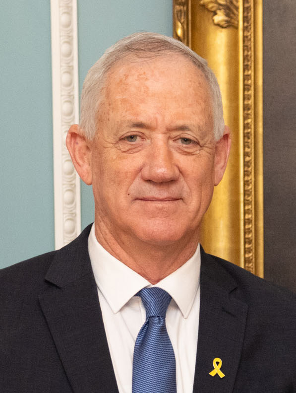
Benny Gantz
Benny Gantz
The former Defense Minister and War Cabinet member who pitches himself as a centrist, stabilizing security authority aimed at traditional and moderate voters.
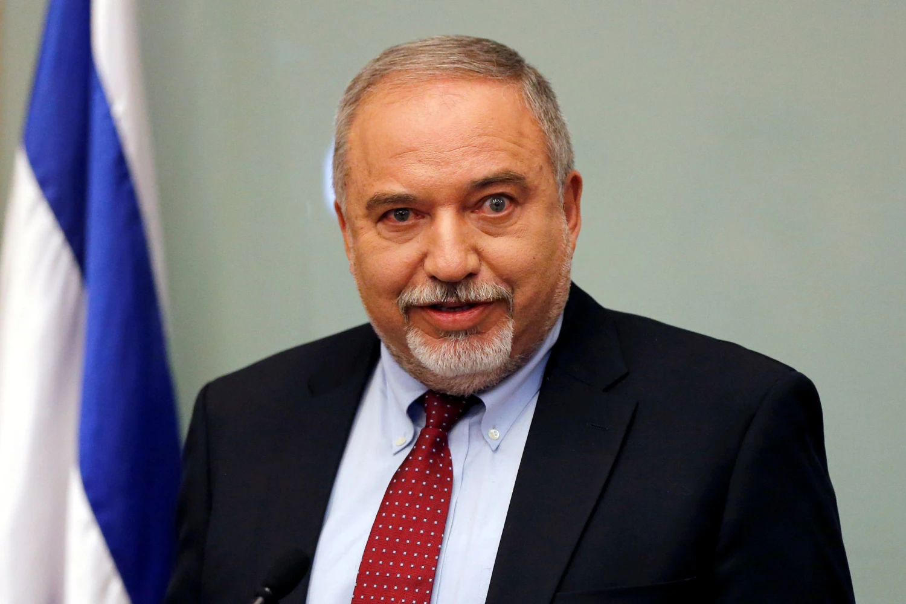
Avigdor Lieberman
Avigdor Lieberman
A fiercely secular right-wing nationalist whose primary campaign message demands immediate, universal military enlistment for the ultra-Orthodox population.
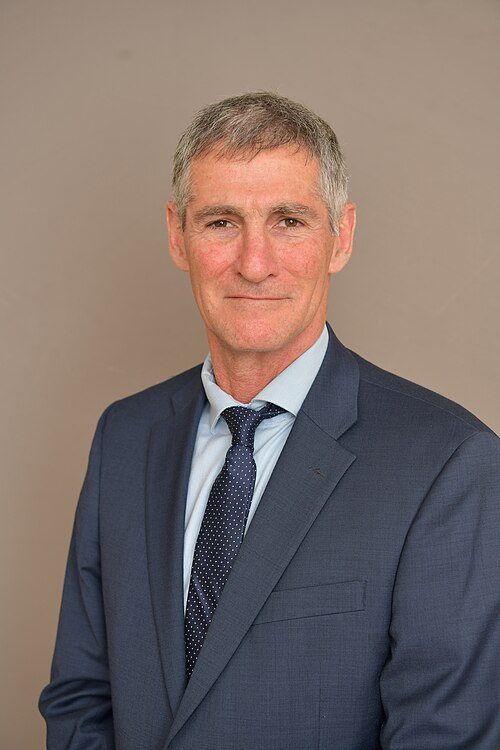
Yair Golan
Yair Golan
A former IDF Deputy Chief of Staff who successfully permanently merged the historic Labor and Meretz parties into a single, unified Zionist Left-wing powerhouse called "The Democrats."
Yousef Jabareen
Yousef Jabareen
The newly elected chairman of the secular, Arab-Jewish socialist front who won a highly contested party primary, replacing veteran lawmaker Ayman Odeh as the face of the faction.
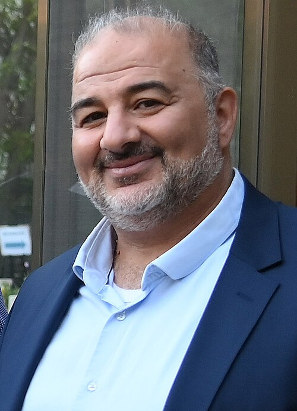
Mansour Abbas
Mansour Abbas
The pioneer of pragmatic Arab politics who is running for the last time while introducing a historic change: actively inviting Jewish candidates to join his Islamist party list to maximize electoral appeal.
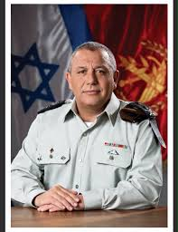
Gadi Eisenkot
Gadi Eisenkot
A highly respected former IDF Chief of Staff whose surging personal popularity and independent reformist list have positioned him as a premier, security-first contender for the Premiership.
Michal Rozin
Michal Rozin
A veteran former Meretz lawmaker and award-winning parliamentarian who has officially launched a primary campaign to secure one of the faction's highly coveted reserved slots on the unified left-wing list.